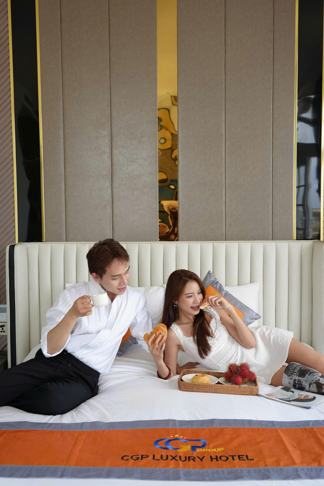
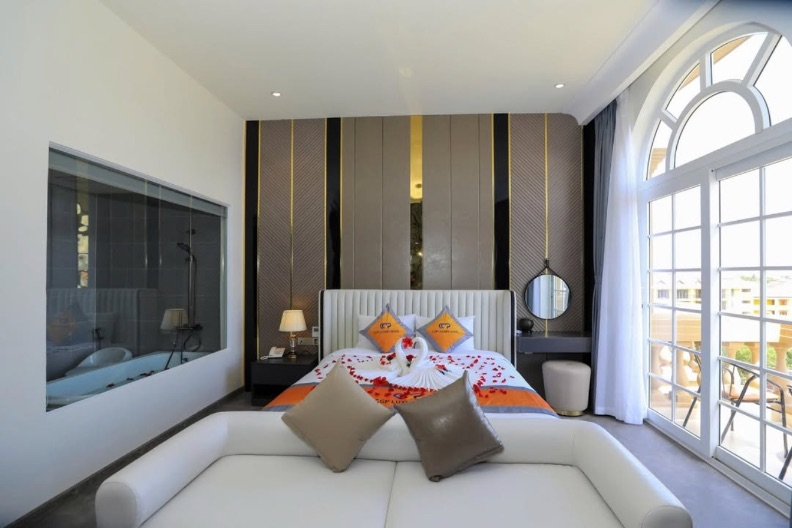

Tiếng Việt
Tiếng Việt English
English 한국어
한국어 中文
中文 Русский
Русский Deutsch
Deutsch
Есть места, которые запоминаются после первого же визита, и для многих пар Хойан – одно из них. Свет фонарей, отражённый в реке, жёлтые стены, увитые бугенвиллеей, стрекот велосипедов на деревенской дороге. Здесь всё словно создано как декорация для истории любви. Если вы планируете медовый месяц или поездку на годовщину, в этой статье мы расскажем о самых романтичных моментах Хойана и о том, как CGP Luxury Hotel поможет сделать путешествие идеальным.
Почему Хойан идеален для медового месяца?
В отличие от шумных курортов, жизнь в Хойане течёт неспешно. Здесь нет шумных торговых центров и небоскрёбов. Вместо них – маленькие улочки, рисовые поля и длинная береговая линия. Именно это нужно молодожёнам: время друг для друга без спешки.
Поэтичная атмосфера
Старый город входит в список Всемирного наследия ЮНЕСКО и прекраснее всего вечером, когда зажигаются фонари.
Красивые кадры на каждом шагу
Жёлтые стены, деревянные двери, бугенвиллея и фонари. Хойан – это фотостудия под открытым небом для свадебных фото и снимков медового месяца.
Город, поля и море
За одну поездку можно прогуляться по Старому городу, прокатиться на велосипеде по полям и встретить рассвет у моря.
Уединение и тишина
CGP всего в 1 км от Старого города, но достаточно далеко, чтобы наслаждаться тихими вечерами вдвоём.
8 романтических моментов в Хойане
1. Фонарики на реке Хоай
С наступлением темноты сядьте вдвоём в маленькую деревянную лодку, медленно плывущую по реке Хоай среди сотен фонарей. Каждый отпускает бумажный фонарик и загадывает желание. Почти каждая пара вспоминает этот момент, рассказывая о Хойане.
 Фото: Dennis G. Jarvis / Wikimedia Commons, CC BY-SA 2.0
Фото: Dennis G. Jarvis / Wikimedia Commons, CC BY-SA 2.0
2. Плавающий завтрак в бассейне
Однажды утром плетёный поднос с выпечкой, свежими фруктами и арбузным соком подадут прямо на воду бассейна отеля. Вы будете нежиться в прохладной воде и завтракать вместе. Пожалуйста, закажите его на ресепшен минимум за день.


3. Велопрогулка по рисовым полям на рассвете
Возьмите в отеле два велосипеда с плетёными корзинами и поезжайте к полям вокруг Хойана, когда встаёт солнце. Свежий воздух, роса на рисовых листьях и белые цапли в небе. Такое утро станет красивым воспоминанием в альбоме вашего медового месяца.

4. Фото у стены с бугенвиллеей
Прямо перед отелем – стена ярко-розовой бугенвиллеи, цветущей круглый год, любимое место для фото у наших гостей. В Старом городе жёлтые стены, деревянные двери и фонари тоже станут отличным фоном. Снимайте рано утром, пока улицы пусты.
5. Ванна с видом на город
После долгого дня прогулок нет ничего приятнее, чем вместе понежиться в ванне у большого окна, глядя на арку и закат. Ванны есть в номерах King Suite Balcony.
6. Ужин у реки
В Хойане много маленьких ресторанов у реки со свечами и фонарями. Выберите столик у окна, закажите местные блюда, например као лау и курицу с рисом, и любуйтесь ночной рекой вместе.
 Фото: Christophe95 / Wikimedia Commons, CC BY-SA 4.0
Фото: Christophe95 / Wikimedia Commons, CC BY-SA 4.0
7. Рассвет на пляже Ан Банг
Пляж Ан Банг примерно в 3 км от отеля. Встаньте однажды пораньше, доедьте на велосипеде до моря, сядьте на песок и встретьте восход. Это редкий момент покоя в суете жизни.
8. Парные наряды на заказ
Хойан славится портными. Вы можете сшить аозай, костюм или парные наряды, чтобы носить их в поездке. Обычно заказ готов за 24–48 часов, как раз чтобы увезти домой памятный наряд.
Выбор номера для двоих
В медовый месяц номер – это не просто место для сна, а ваше личное пространство. CGP Luxury Hotel предлагает три варианта:
| Номер | Романтические детали | Лучше всего для |
|---|---|---|
| King Suite Balcony (номер 500) | Арочные двери, балкон, ванна у большого окна | Медового месяца, годовщины свадьбы |
| King Suite Balcony (номер 301) | Угловой номер, окна на две стороны, ванна, кожаный диван | Пар, ценящих уединение |
| King Suite Pool Access (номера 101, 102) | Выход на деревянную террасу у бассейна | Пар, любящих ночное купание и плавающий завтрак |


Пакеты проживания для пар
В CGP Luxury Hotel есть коллекция пакетов, созданных специально для пар. Каждый пакет включает проживание и ежедневный завтрак. В зависимости от пакета добавляются украшение номера, ужин, послеобеденный чай или массаж. Подробности на странице каждого пакета.
4 ночиМедовый месяц
3 ночиРомантический отдых
3 ночиПразднование годовщины
7 ночейCGP Signature
Бронируйте заранееНомеров с ванной всего два. Если вы хотите гарантированно получить номер 500 или 301 на медовый месяц, бронируйте заранее и укажите пожелание при бронировании.
Маршрут медового месяца на 4 дня
- День 1
Приезд и отдых
Заселение с 14:00, номер украшен, если вы выбрали пакет «Медовый месяц». Днём бассейн, вечером прогулка по Старому городу и фонарики.
- День 2
Плавающий завтрак и Старый город
Плавающий завтрак у бассейна. Утром заказ парных нарядов и посещение Японского моста и старинных домов. Днём ванна, вечером ужин у реки.
- День 3
Деревня и море
Велопрогулка по рисовым полям и деревне Чакуэ. Обед из морепродуктов на пляже Ан Банг. После обеда фотосессия у стены с бугенвиллеей.
- День 4
Неспешное утро
Рассвет на пляже, завтрак в отеле, получение пошитой одежды и подготовка к выезду. Если хотите задержаться, спросите на ресепшен о позднем выезде.
Мы не создаём для вас воспоминания. Мы лишь готовим пространство, чтобы вы вдвоём написали свою историю.Команда CGP Luxury Hotel
Сюрприз для любимого человека
Если хотите сделать сюрприз своей половинке, свяжитесь с ресепшен до поездки. Наша команда поможет:
- Украсить номер лепестками роз и полотенцами в форме сердец.
- Организовать плавающий завтрак в то самое особенное утро.
- Посоветовать ресторан у реки и забронировать столик для романтического ужина.


Некоторые услуги нужно заказывать заранее, они могут быть платными. Ресепшен подробно всё расскажет, если вы свяжетесь с нами по телефону (+84) 905 926 638 или по почте cgpluxuryhotelhoian@gmail.com.
Частые вопросы
Сколько длится пакет «Медовый месяц»?
Пакет рассчитан на 4 ночи и включает проживание, ежедневный завтрак и преимущества для пар, указанные на странице пакета.
В каких номерах есть ванна для двоих?
Ванна есть в номерах King Suite Balcony (301 и 500). В номере 500 ванна стоит прямо у большого окна.
Можно ли украсить номер?
Да. Свяжитесь с ресепшен до поездки, и вам помогут украсить номер так, как вы хотите.
Когда лучше всего ехать в медовый месяц?
С февраля по апрель прохладно и мало дождей, это идеальное время. Если приехать в полнолуние по лунному календарю, Старый город будет ещё волшебнее.
Начните свою историю
Позвольте CGP Luxury Hotel подготовить пространство, а вам останется лишь наслаждаться каждым мгновением вместе.